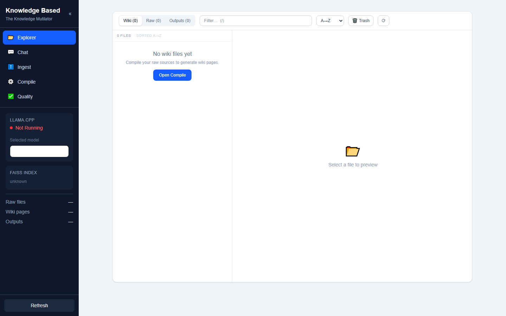
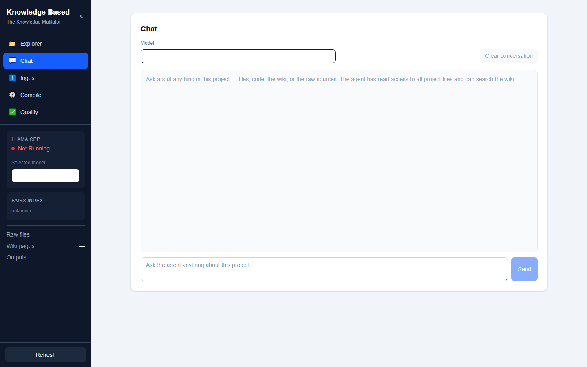
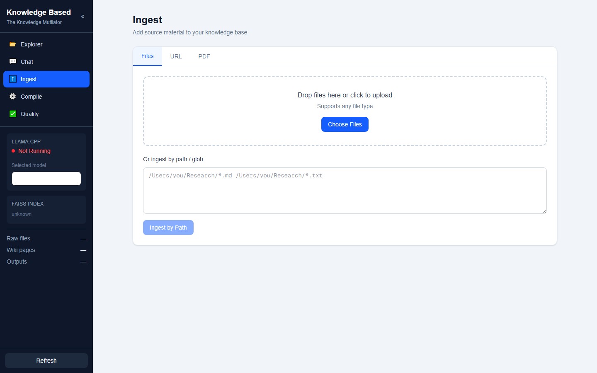
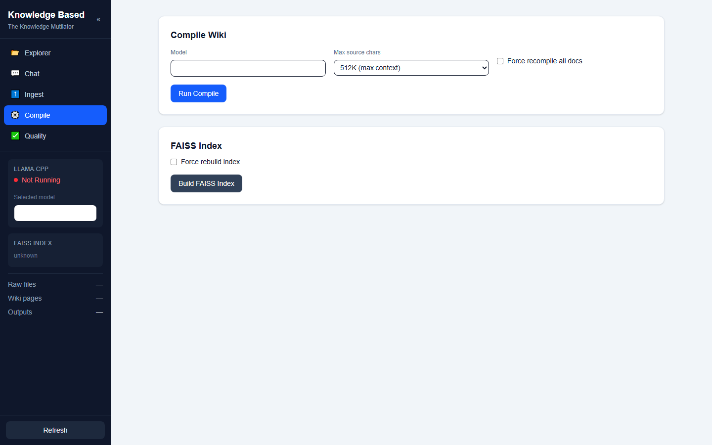
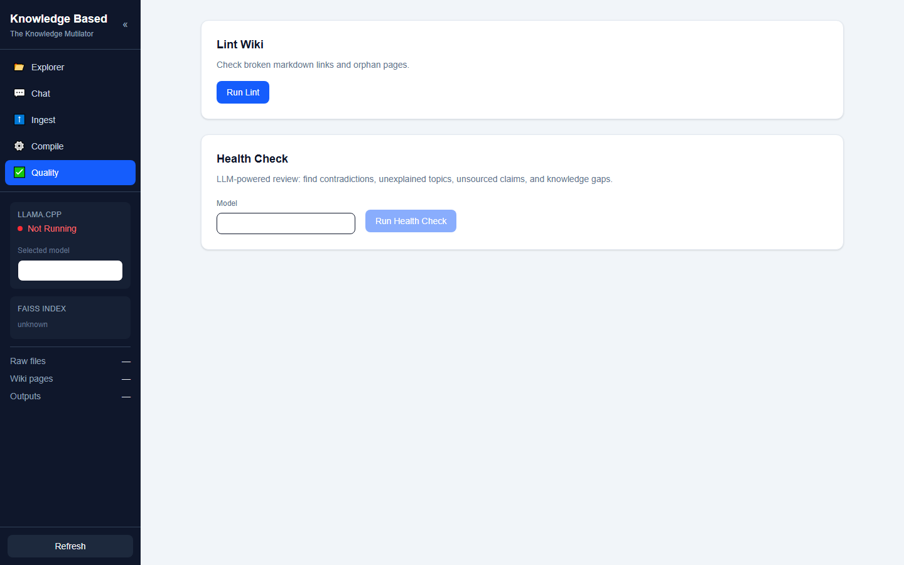
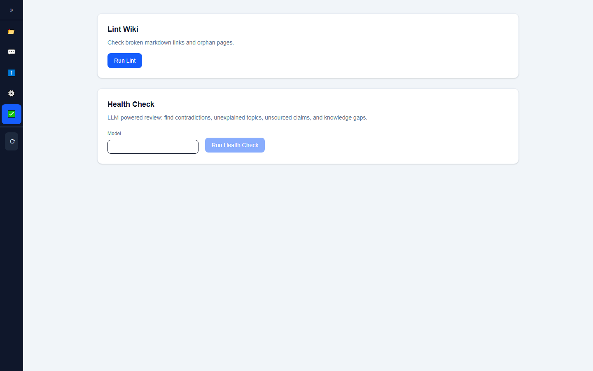
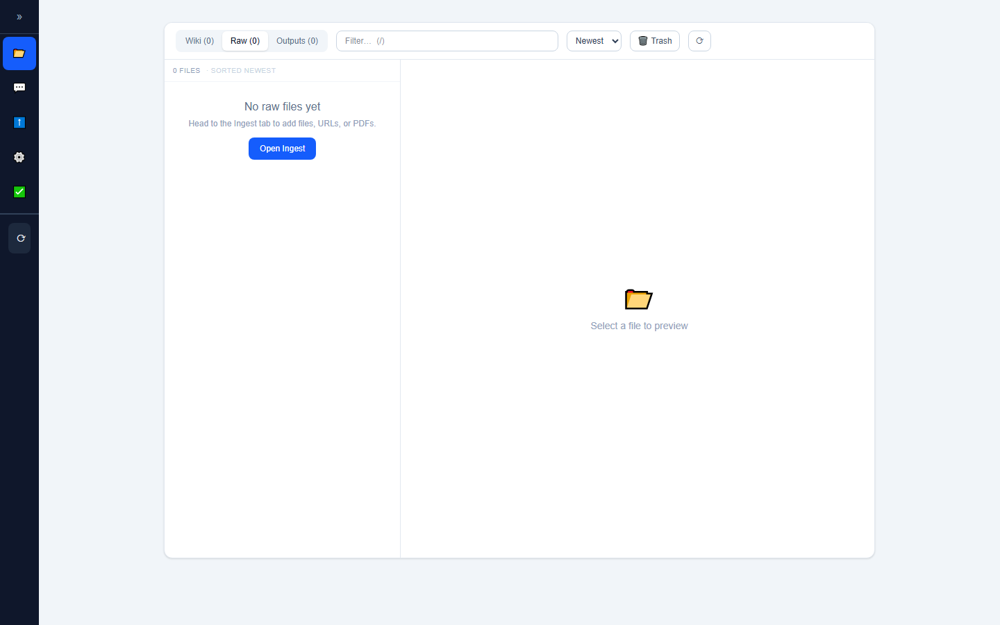

Knowledge Base
UI Audit & Design System
A design-system-level critique comparing the current UI against leading SaaS products — Linear, Notion, Obsidian, Vercel — with a concrete roadmap to close the gap.
The app is structurally sound but visually generic. The layout, component
architecture, and UX patterns are all competent. The gap between this and a "leading SaaS"
is entirely in design system intentionality: custom color, typographic hierarchy,
consistent icon treatment, micro-animations, and empty-state design.
The current palette is unmistakably default Tailwind — slate-100
background, blue-600 accent, slate-900 sidebar, rounded-xl
cards. Every SaaS app launched from create-next-app in the last two years looks
identical. There is zero brand signal.
The fastest path to a premium feel is not a redesign — it's swapping five design tokens
and adding a transition system. Estimated effort: 2–3 hours.
🔬 Design System Audit
Six dimensions evaluated against the leading SaaS tier. Each dimension includes what's current, what the target looks like, and the gap.
bg-slate-100 page, bg-slate-900 sidebar,
bg-blue-600 accent. The most common SaaS palette in existence.
Could be swapped into any admin dashboard.
#5E6AD2. Notion: warm grays #F7F6F3.
Obsidian: deep charcoal + violet accent. Even shifting to indigo-600
or violet-600 would signal intentionality.
📂 💬 ℹ️ ⚙️ ✅ render differently on Windows vs macOS.
Signal "side project" immediately. No stroke weight consistency, no grid alignment.
shadow-sm is barely visible — cards are in a gray zone
between "has shadow" and "no shadow."
rounded-md (6px) for sharpness. Or go larger but pair with
custom illustrations. Cards should either have a visible border or a clear shadow —
not both at minimum opacity.
transition-colors duration-150
on buttons and cards makes a visible difference.
📊 Leading SaaS Comparison
How this app stacks up across six dimensions against products known for design quality.
| Dimension | This App | Linear | Notion | Obsidian | Vercel |
|---|---|---|---|---|---|
| Typography | Default Geist, no hierarchy | Inter, tight tracking, deliberate weights | Custom serif headings, warm body | JetBrains Mono, technical | Geist + tight tracking + heavy weights |
| Color | Tailwind slate + blue-600 | Custom purple #5E6AD2 | Warm grays #F7F6F3 | Deep charcoal + violet accent | Zinc + white, minimal color |
| Icons | System emoji | Custom SVG, 1.5px stroke | Custom illustrated icons | Consistent line icons | Custom geometric SVG |
| Cards | shadow-sm + border, identical | No border, subtle bg shift | No card chrome, full-width | Minimal, no card chrome | Zinc border, sharp corners |
| Empty States | Emoji + text | Illustration + copy + CTA | Screenshot + copy + CTA | ASCII art + copy | Clean text + CTA |
| Motion | None | 150ms ease-out everywhere | Subtle fade, spring animations | Minimal (terminal feel) | Spring-based, generous |
| Overall | Competent, generic | Sharp, premium | Warm, editorial | Technical, dense | Clean, minimal |
🔴 Critical Issues
Broken or misleading elements that undermine credibility immediately.
layout.tsx metadata and Sidebar.tsx heading.🗺️ Roadmap to Leading SaaS Tier
Ten steps, ordered by impact-to-effort ratio. Total estimated effort: ~3 hours. Each step is a surgical change — no refactoring, no rearchitecture.
blue-600 with violet-600 or indigo-600 everywhere.
This single swap — buttons, active nav, accents — is the cheapest signal of "intentional design."
Custom hex like #7C3AED would be even better.
slate for zinc (cooler, more technical like Vercel) or
use warm custom neutrals like Notion (#F7F6F3). The current slate-100
is the most recognizable "I used Tailwind defaults" signal.
npm i lucide-react, then swap 📂 → <FolderOpen />,
💬 → <MessageSquare />, etc. Consistent 2px stroke,
24×24 grid, matched to Inter weight. Immediate professionalism upgrade.
tracking-tight to all <h1>–<h3> headings.
Increase weight contrast: headings font-semibold, labels font-medium,
body font-normal. Current state: everything is font-medium.
transition-colors duration-150 ease-out to all buttons, nav items, and
interactive cards. Add animate-in fade-in duration-200 to tab content switches.
This is what separates "static page" from "application."
border-l-2 border-l-violet-500) or a subtle top gradient.
Secondary cards stay plain. Current state: every SectionCard is identical.
● Running · qwen3.6-27b on one line.
Move model selector to a top bar or keep sidebar-only as single source of truth.
animate-pulse
makes the app feel responsive even when the API is slow.
🎨 Token Changes
The exact design token swaps to move from "default Tailwind" to "intentional SaaS."
--background: #f1f5f9; → --background: #fafafa;
--sidebar: #0f172a; → --sidebar: #09090b;
--accent: #2563eb; → --accent: #7c3aed;
--border: #e2e8f0; → --border: #e4e4e7;
--font: 'Geist Sans'; → --font: 'Inter';
📸 Screenshots
Eight views captured via Playwright headless inspection.







